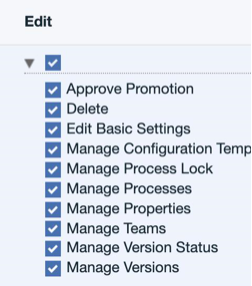

This article was originaly published in 2020.03.17
7.0.5.2
The following enhancements are included in each release. In addition to various bug fixes.
Permission for setting version statuses
The new
Manage Versions
permission allows you to manage which users can assign a status to a version.

Release Summary
-
New permission to assign users for setting version status
-
Recommended fixes for UrbanCode Deploy
Release Notes
For information on documentation and support resources, software and hardware requirements and installation steps, click the
Getting Started
tab.
Fixes
A cumulative list of fixes in this release, and any future fix packs can be found in the
Fixlist
document.
|
PH20028
|
Importing Component Template with Tags as an Upgrade Fails with Constraint Violation
|
|
PH18680
|
Slow Start of Deployment Processes using many component tags
|
|
PH18402
|
User without “manage approval processes” permission can exempt environments from needing an approval before running deployments
|
|
PH15748
|
VC Caching Raises Security Exception When Restoring From Cache
|
|
PH18758
|
Unlicensed Authorized agents not being refreshed after updating server license connection
|
Getting Started
For fixes contained in this release, and any known issues, click the
Release Notes
tab.
For supported platforms and requirements, see the reports that can be dynamically generated using the
Software Product Compatibility Reports (SPCR)
tool.
Note:
Some supported plug-ins have system requirements that vary from the core product. Information on system requirements for individual plug-ins is available on the download page for that plug-in.
To get started quickly, IBM UrbanCode Deploy is shipped with an Apache Derby database. Apache Derby deployments are not supported for production environments. As you plan your production topology, review the
installation guide
.
Install the server
This release is available for download from
Fix Central
, requiring authentication.
Information for installing the server, see the
Installing server
section in the product documentation.
For information on installing licenses, see
Managing Licenses
.
Learn
To learn more about new enhancements in this release, click the
What’s New
tab.
To learn more about IBM UrbanCode Deploy, see the
documentation
.
For help installing or using IBM UrbanCode Deploy, post your questions in the
forums
or contact
support
.
To suggest an enhancement to the product, visit the
RFE Community
.
Get support
For information from support, including FAQs, visit the
IBM Support portal.
You can configure the support portal to view information about specific products.